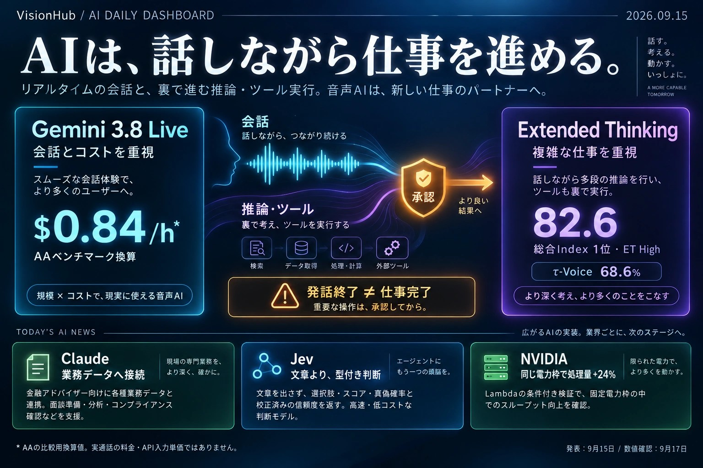

01 / 体験の変化
待たせずに話し、
裏で処理を進める。
特にETは、声を返しながら背景推論を継続する設計です。[4]
Gemini 3.8 Liveが変えるのは、声の自然さだけではありません。
会話・推論・外部ツールを並行して動かす音声AIを、能力、費用、実行権限の3つに分けて読み解きます。[1][4]

会話のテンポを保ちながら、検索や計算に必要な処理を進める。
そのために、低遅延の標準版と、背景推論を強めたET版を使い分けます。[1][2]
会話への割り込み、視覚入力、非同期ツールを扱う標準モデル。推論そのものがないのではなく、thinking_levelを利用者が指定できないモデルです。[3][7]
発話しながら背景で考え、ツール結果を待ち、追加の処理へ進むモデル。推論量をlow / medium / highから選びます。MINIMALは使えません。[4][7]
従来型の一例は「音声を文字にする→文章として考える→音声に戻す」という分業です。今回のモデルは音声そのものを入出力として扱います。[6] ただし、ネイティブ音声であることと、外部システムの処理が並行して走ることは別の設計要素です。
たとえば音声モデルが即座に「確認します」と言っても、予約システムが遅ければ確定結果は遅れます。モデル内部の改善だけで、ネットワーク遅延、DBのロック、ツールの権限不足まで解消するわけではありません。ここはシステム全体で測定する必要があります。〈技術的な読み解き〉
両モデルを提供。Gemini APIのリリースノートは9月15日からGA（一般提供）と明記しています。[2]
標準版はSearch Live。ETはGemini Liveに加え、DocsはPro / Ultra、Gmail・KeepはGoogle AIプラン向けに展開と発表。地域・プラン・展開時期の条件は、各製品側で別途確認が必要です。[1]
Enterpriseはprivate preview。企業向けWorkspaceなどの予定を、個人向けサービスへの展開と同一視しません。[1]
同じ「3.8」でもFlashとは別の軸。Liveの主題は、音声対話と業務処理をどうつなぐかです。[2]
ETで最も重要なのは、turnComplete: trueを受け取っても、後から音声やツール呼び出しが届き得ることです。受信を止めると、肝心の後続処理を取りこぼします。[4][5]
turnCompleteは発話の区切り。ETでは、これだけで待機中とは判断できません。[4]
IN_PROGRESSなら処理継続。IDLEでモデル側の一連の処理が終わります。[4]
承認待ち、更新中、確定、失敗は業務システム側で持つ状態です。IDLEだけで「予約完了」と表示しません。〈設計提案〉
これは変更できるかの相談です。この時点では予約を書き換えません。
SDKごとのイベント構造は異なるため、次は実装方針を示す擬似コードです。モデルのメッセージ内に複数の要素が含まれる前提で処理します。
while session_is_open:
event = await receive_next_event()
process_audio_frames(event)
process_transcripts(event)
dispatch_tool_calls_without_blocking_receiver(event)
handle_interruption_and_tool_cancellation(event)
if event.turnComplete:
mark_current_utterance_finished()
# ETではここで break / close しない
if event.interaction_status == "IN_PROGRESS":
show_model_processing()
elif event.interaction_status == "IDLE":
show_model_idle()
# 外部システムの COMMITTED とは別
update_business_ui_from_server_owned_transaction_state()JSONとSDKではcamelCase / snake_caseの表記が異なることがあります。受信側のturnCompleteと、送信側のturn_complete=trueも区別します。後者はETの進行中の生成を中断し得る設定です。[4][5]
ツール呼び出しを受けた処理が、同じ受信ループを長時間ふさぐのも避けます。外部処理は別タスクへ渡し、結果を呼び出しIDに対応づけて戻す、という責務分離が必要です。〈設計提案〉
音声の状態・AIの処理状態・業務の確定状態。この3つを分けるのが、ET移行の出発点です。
首位はET Highの82.6。標準Liveは76.0で5位です。
一方、会話の好み・速度・特定の成功率を見ると、別のモデルが上に来ます。[7]
| モデル / 設定 | 総合Index 高いほど良い | τ-Voice 業務シナリオ | Arena 好み Elo | タスク 成功率 | 初音 秒 | AA換算費用 $/入力音声時* |
|---|---|---|---|---|---|---|
| Gemini 3.8 Live ETHigh / 総合1位 | 82.6 | 68.6% | 990 | 89.1% | 1.35 | $3.50 |
| GPT-Live-1 Astramedium | 81.5 | 67.9% | 1048 | 87.4% | 1.34 | $5.83 |
| Grok Voice Think Fast 2.0High | 81.3 | 56.5% | 1011 | 94.6% | 0.70 | $4.80 |
| GPT-Live-1 Sollow | 80.1 | 59.3% | 1053 | 90.9% | 1.24 | $4.47 |
| Gemini 3.8 Live標準 / 総合5位 | 76.0 | 30.1% | 1083 | 93.2% | 1.18 | $0.84 |
| GPT-Realtime-2.1High | 73.9 | 45.7% | 928 | 91.5% | 1.21 | $10.75 |
| Gemini 3.1 Flash LiveHigh / 旧世代 | 71.5 | 37.7% | 1063 | 71.8% | 2.99 | $1.75 |
| Gemini 3.1 Flash LiveMinimal / 旧世代 | 63.9 | 26.2% | 1096 | 74.6% | 0.96 | $1.50 |
出典：[7]。*AA換算費用は固定問題セットの総コストを入力音声時間で割った比較指標であり、音声入力だけの単価や実通話1時間の料金ではありません。横スクロール対応。順位・Eloは将来変動します。
τ-Voiceでは明確に役割が分かれます。ただし、Astraの67.9%との差は0.7ポイント。これだけで統計的な優位とは断定できません。[7]
Arenaは声質だけでなく、対話全体への好みです。旧3.1のHighとは別設定。標準Liveの1083は高い一方、ETは990です。[7]
Grokの0.70秒は表内で最速。全掲載モデルの最速ではなく、Deepslate Opalには0.44秒の結果もあります。[7]
試験が違うからです。τ-Voiceは航空・小売・通信の模擬カスタマーサポートで、処理後のデータベース状態が正解と一致したかを見ます。Arenaのタスク成功率は、対象会話で正しい最終ツール呼び出しが行われたかを見る指標です。[7]
例えるなら「複数の規則を守って予約を変更し切れたか」と「対象の会話で最後に正しい操作を選べたか」は、似ていても同じ試験ではありません。どちらも本番の問い合わせ全体にそのまま掛けられる成功率ではない、という点が実務では重要です。〈解釈〉
Indexは①Big Bench Audio、②τ-Voice、③変換後のArena評価、④タスク成功率の等重み平均です。会話の割り込みなどを測るFull Duplex Benchの指標は、別軸で掲載されています。[7]
Index用のEloは公開対象となった時点で固定されるため、表に見える現在のEloを式に入れても、公表Indexを厳密には再現できません。またτ-Voiceは通常3試行の平均ですが、Astra / Solは1試行、Realtime-2.1 Highは2試行という注記があります。[7]
したがって「同じ評価機関が測った」ことと「試験条件・誤差まで完全に同じ」ことは別です。GoogleがAAの数値を紹介していることも、GoogleとAAが独立に同じ実験を2回再現した証拠ではありません。〈解釈〉
9月17日のArenaでは、旧3.1 Flash Live Minimalが1096 ±27（841サンプル）、標準3.8 Liveが1083 ±30（482サンプル）です。±の範囲は掲載された95%信頼区間で、順位範囲も前者は1〜2位、後者は1〜4位と示されています。[25]
点推定の差は13 Eloですが、掲載区間は重なっています。したがって本稿では「旧モデルの点推定が上」と読み、旧モデルの声が明確に優れている、あるいは新モデルが劣化したとは断定しません。区間の重なりだけで同等性を証明できるわけでもありません。会話全体の好みを測る評価であり、声質だけの試験でもない点に注意します。〈統計的な読み解き〉
実務では、同じ日本語シナリオで声を伏せて比較し、好みと業務完遂率を別々に記録します。最初の声が好まれても、実行結果まで正しいとは限りません。〈評価提案〉
総合順位で候補を絞り、最後は自社の日本語・業務フロー・待ち時間で選ぶ。1つのスコアに全部を代表させない。
APIの単価と、AAが試験に払った費用の換算値は別です。
標準LiveとETは公式のトークン単価が同じでも、使う量が違えば実費は変わります。[7][8]
音声入力 $3 / 100万トークン、音声出力 $12 / 100万トークンの分換算。両モデル共通の掲載単価です。[8]
音声・テキストの入出力、分離して計上される推論トークンを含む試験の総コストを、入力音声の長さで割った値。外部ツール費などは含みません。[7]
| 入力・出力 | 料金 | 実務での注意 |
|---|---|---|
| 音声入力 | $3.00 / 約$0.005/分 | 会話の長さと、課金対象の音声量を同一視しない。 |
| 音声出力 | $12.00 / 約$0.018/分 | 途中経過の発話が増えれば、出力費も増える。 |
| テキスト入力 | $0.75 | 指示・文脈・ツール結果も見積もり対象。 |
| テキスト出力・推論 | $4.50 | 声に出ない処理を含め、実際の利用量で検算する。 |
| 画像・動画入力 | $1.00 / 約$0.002/分 | 不要なカメラ入力を送り続けない。 |
検索の別課金、ネットワーク、電話回線、周辺サーバー、業務API、税などは別です。無料ティアの利用条件を、本番運用の契約条件と同一視しません。[8]
これは下限保証ではなく、入力した課金対象の音声分数に基づく部分見積もりです。ETの推論費などは含みません。初期値は仮定です。
6分 × $0.005 + 4分 × $0.018 = $0.102 / 件
実通話10分だから入力6分・出力4分になる、という意味ではありません。連続送信や会話の重なりも考慮し、実際の利用量で置き換えてください。為替換算は行っていません。
AAは同じ40問のBig Bench Audio部分集合で費用を比較しています。これは「同じ課題を解く効率」の参考になりますが、受付業務の発話量やツール呼び出し回数を代表するものではありません。[7]
同じ掲載単価のETが、この試験では標準の約4.17倍の費用です。違いは単価だけでなく、処理の長さや出力・推論の使用量にも表れます。逆に、旧モデルの$1.75と比べて安いからといって、公式の音声トークン単価そのものが半減したとは言えません。[7][8]
本番の選定指標は「1分あたり」だけでなく、「正しく1件を終えるまでの総費用」にします。安いモデルでも、失敗後の再試行や人への転送が増えれば全体費用は上がります。〈実務への提案〉
比較にはAA、見積もりには公式単価、本番予算には実測の利用量。この3段階で考えると、価格の誤読を防げます。
予約の検索は進めても、予約の確定は勝手に進めない。
会話を止めないことと、承認を省くことは違います。ここからはAPI仕様に基づく実装提案です。
許可されたデータだけを参照。まだ変更しない。
対象・変更前後・費用・期限を特定する。
利用者が何に同意したかを記録する。
サーバーが権限と状態を再検証して実行する。
検索・空き枠照会はread-only。外部送信、予約確定、取消、削除は副作用のあるwriteです。writeを行うバックエンドが、本人・権限・承認対象・有効期限を検査します。
モデルが高い確率で「承認された」と推測しても、それだけを実行許可にしません。承認対象の操作内容が変わった場合は、前の承認を流用しない設計にします。
利用者の割り込みで音声を止めても、外部APIへの送信済み処理が取り消されたとは限りません。処理IDで照会し、「成功したが返事だけ失われた」状態を識別します。
再試行には冪等キーを用意し、同じ要求が二度届いても同じ予約を二重に作らない設計にします。接続の再開と、業務処理の再実行は別の問題です。[10]
| 確認点 | ETの仕様 | 実装の対応 |
|---|---|---|
| 発話終了 | turnCompleteの後も処理継続し得る | 受信ループを終了しない。[4] |
| AIの待機状態 | interaction_statusで通知 | IN_PROGRESS / IDLEをUIに反映。[4] |
| 関数呼び出し | NON_BLOCKINGのみ。同期はエラー | 非同期で実行し、結果を対応する呼び出しへ返す。[4] |
| Function scheduling | ETでは非対応 | 旧例のscheduling設定をそのまま移植しない。[4] |
| 推論設定 | low / medium / high。MINIMAL不可 | 標準Liveに推論レベル設定を送らない。[3][4] |
| 送信のturn_complete | trueが進行中の生成を中断し得る | 受信側の完了通知と混同しない。[4] |
| 付加機能 | コード実行、構造化出力、キャッシュ、URL contextなどは非対応 | 別モデルのサンプルコードを無条件に流用しない。[4] |
| Proactive audio | 両モデルで常時有効。proactive_audio: falseはエラー | 旧モデルの無効化設定を削除。アプリ側の録音停止・ツール実行権限とは別に扱う。[3][4] |
標準版との違い：標準LiveはNON_BLOCKINGが既定ですが、互換性のためBLOCKINGも利用できます。Function schedulingも対応します。ETの「非同期のみ・scheduling不可」を標準版へ広げて解釈しないでください。[3][4]
共通ガイドとモデル別ページの記述に差がある場合、この版では9月15日更新の個別モデル仕様を優先しました。会話中に関数へ引数を渡せることと、通常のStructured outputs機能が使えることも別です。
Live APIにはクライアント接続用の短命トークンがあります。[11] 自社の認証済みバックエンドで発行し、モデル接続の認証と、予約を変更する業務権限の認証は分離します。トークンを持っていることだけで、他人の予約へアクセスできない構成にします。〈設計提案〉
発話開始・終了、処理状態、ツール呼び出しID、承認された変更案、実行結果、再試行、利用量を関連づけます。全文の音声・文字起こしを無条件に保存せず、必要性と保管範囲を先に決めます。〈設計提案〉
Live APIのセッション再開機構だけで、外部DBの重複処理や確定済み予約の整合性まで守れるわけではありません。[10] 復帰時は処理IDで結果を照会し、不明な状態を成功と表示しないようにします。〈設計提案〉
利用者の発話、画面に映った文章、検索結果、ツールの返答は、操作権限の根拠ではありません。指示らしい文字列が紛れ込んでも、許可されたツール・対象・操作だけが通るよう、サーバー側で検査します。〈設計提案〉
AIは提案と対話、システムは権限と確定。重要な操作ほど、この分担を崩さない。
97言語への対応には日本語も含まれます。[1][9]
しかし、今回の総合スコアだけで「日本語の声が大幅に自然になった」とは結論できません。
独り言なのか、相談なのか、実行依頼なのか。言葉だけでは一意に決まらない場面があります。「今から、どのファイルを削除するか」を示して確認する設計が必要です。
「うん」「そうだね」も、変更の承認とは限りません。高リスクの操作では、対象と操作が明確な確認に限定します。これは日本語の優劣を示す実測ではなく、評価に入れるべきシナリオ例です。
自然さ：読み方、間、声の好み、長く聞いたときの疲れやすさ。
理解：人名・数字・日時、言い直し、否定、雑音、日英の切替。
実行：正しい対象への操作、不要な変更をしないこと、途中で取り消せること、確定結果の説明。
同じ3.8という名前でも、Liveと同日のニュースではありません。Gemini APIのリリースノートで日付を区別できます。[2]
Googleの公式発表日。音声対話と背景推論のモデルを同時に公開しました。[1]
Impress Watchは12:16 JST掲載。GIGAZINEにも同日記事があります。「国内に報道がない」とは扱いません。[19][20]
9月15日版は公式発表の日付を中心に編集し、9月16日以降の確認事項は続報・検証として区別しています。今回は国内媒体全体の網羅調査をしていないため、「大手はどこも説明していない」「日本語圏は皆この反応」といった一般化はしません。
表示数、いいね数、声への個人の感想は、時刻や観測範囲で変わります。本稿では再現できない投稿カウントを主要指標に採用せず、公式資料・評価機関の定義・モデル別仕様へ戻って確認しました。
「英語圏は単価、日本語圏は声や承認に注目」という見立ては、仮説にはなっても、比較調査なしに地域差の結論にはできません。自然な声を好むこと、仕事を正しく終えてほしいこと、勝手に実行してほしくないことは、併存する評価軸です。〈編集上の判断〉
日本語の評価セットに「曖昧な承認」「言い直し」「否定」を入れる。流暢に返せることだけで合格にしない。
話せるモデルだけでは業務は完成しません。
既存の業務への接続、速い判断、計算資源の効率にも動きがありました。3件の共通点は本稿の分析です。
新モデルではなく、金融アドバイザーが使うシステムへつなぐコネクタと業務Skillsの組み合わせです。[12]
価値は「文章が上手」から「散らばった口座・顧客・面談情報を、必要な仕事の形にまとめる」ことへ移っています。面談準備やポートフォリオの確認、フォローアップ草案を支援し、重要なアクションはレビュー・承認を前提にしています。[12]
読み解き：モデル能力が同じでも、正しい業務データへ、正しい権限で接続できるかが実用性を大きく左右します。
説明文を長く書く代わりに、あらかじめ決めた選択肢や尺度の上で、型付きの判断と確率を返すモデルです。入力された状態を使い、ソフトウェアの分岐へ直接つなぐ発想です。[14][15]
Choice：選択肢から選ぶ。
Score：尺度上で評価する。
Noul：真偽に関する0〜1の値。
各型の確率・信頼度の扱いはAPI仕様で確認します。[15]
問い合わせを既知の窓口に分類する。要確認フラグを立てる。簡単なケースと難しいケースを振り分ける。
ただし、最終的な実行権限は周囲のコードが制限します。
同社自身が、0%は実証された正答率ではなくスキーマ一致の保証だと説明しています。訓練手法をRLCDと呼び、速度測定は主にサービスと同じ米国西海岸から行ったと注記。Doomデモも映像のピクセルではなく、構造化したゲーム状態を入力しています。[14]
たとえば選択肢が「承認」「保留」「拒否」なら、存在しない4つ目の文字列を返さないことと、選ぶべき項目を間違えないことは別です。高い信頼度を実行許可へ直結させず、自社データで誤判定率と、低信頼度を人に回したときの処理量を測ります。〈評価提案〉
同社の速度倍率・費用倍率は条件付きの測定です。別の公開モデルとの「同等の知能」という一般的結論や、X上の個人検証を大規模な独立評価としては採用していません。
読み解き：全部を大きなモデルの長い文章生成で解かず、「小さな判断」と「複雑な推論」を分ける余地があります。LiveやETを置き換える音声モデルではありません。
新チップの発表ではありません。Lambdaが、固定の電力予算内で稼働ノード数と処理量を増やした検証結果です。MaxLPSの仕組み自体は8月24日の資料でも公開済みです。[16][18]
静的な割り当てで余っていた電力枠を、負荷に合わせて使い直す仕組みです。Lambdaの例は5ラック、129kWの予算、85%の電力ポリシー。掲載図はGPT-OSS-120B、ノードあたり40 QPSという条件を示しています。[17]
+24%はLambdaの条件付き検証における処理量の改善です。一方、Vera Rubin NVL72で同じMWあたりGPUを最大40%多く置けるという説明はNVIDIAの投影です。対象ハードウェアも、測っている量も、証拠の段階も異なります。[16][17]
電力ポリシーの85%を掛け算するだけで、どんな設備でも同じ効果が出るわけではありません。実際の負荷、GPU以外の消費、冷却、ピーク制御、待ち時間の制約を合わせて見る必要があります。〈読み解き〉
この発表が示すのは、個々のGPUをいつも最大出力で回すことと、設備全体の処理量を最大化することは一致しない場合がある、という点です。顧客PoCの結果を全フリートで実現済みとは扱いません。[17]
読み解き：AIの費用はモデル選びだけでなく、設備の使い方でも変わります。ただし、この改善がAPI料金へ直ちに還元されるとまでは言えません。
まずは調べるだけ、次に変更案を作る、最後に承認付きで実行する。
ここからはニュースを踏まえた、開発・運用チーム向けの提案です。
合成データで問い合わせと検索を試し、標準LiveとETの日本語・正答率・最終回答時間・利用量を同じ条件で記録します。
予約変更などの案を作らせ、正しい対象・日時・理由になっているかを人が確認。曖昧な依頼で勝手に進まないかを試します。
承認記録、冪等キー、監査ログ、タイムアウト後の照会、人への切替がそろった範囲から実行を許可します。
自社の業務上の完遂率。言い換えの上手さではなく、正しい状態になったかを確認する。
初音までと、確定回答までの時間を分離。平均だけでなく、遅いケースのP95も見る。
音声・推論・ツール・再試行・人への転送を含む、完遂1件あたりの総費用を比べる。
未承認の変更、別人への操作、二重実行を失敗として独立集計。許容件数の目標は0に置く。
モデルがGAであることと、自社の業務に適合することは別です。まずは実データを含まない試験から始め、利用契約、入力データの扱い、保持、リージョン、アクセス権、既存の社内基準に照らして適用範囲を決めます。
たとえば診療・投資などの判断と、予約照会・面談資料の下書きではリスクが異なります。この資料はモデルとシステム設計の解説であり、特定サービスの法令適合や医療・投資判断を保証するものではありません。
Appleは9月14日のソフトウェア更新とともに英語ベータを案内し、日本語などは10月予定としています。[21] EUの遅れはiOS / iPadOSなどの対象を特定して読む必要があり、「EUではすべて使えない」と一括りにはしません。[22]
WSJは9月14日18:31 UTC（日本時間9月15日03:31）、OpenAIによるGlass Imagingの買収を3億ドル超の評価額で報じました。[23] 今回の調査ではOpenAI公式発表を確認できていません。買収の報道を、特定の新端末や搭載時期が確定した話へ広げません。
9月15日の変化は、AIが「答える道具」から「対話しながら処理する仕組み」へ進んだこと。採用の決め手は、賢さだけでなく、正しく・安く・勝手に動かずに終えられるかです。
最終更新 2026-09-15 UTC
interaction_status、NON_BLOCKINGのみ、scheduling非対応、推論レベル。
2026-09-17取得スナップショット
モデル別実測値、Indexの定義、試行回数、費用・速度の測定条件。動的ページ。
2026-09-17取得スナップショット
Eloの95%信頼区間、サンプル数、順位範囲。小差を確定的な優劣へ読み替えないための資料。
会話、推論、実行。つなぐところと、切り分けて守るところを決める。